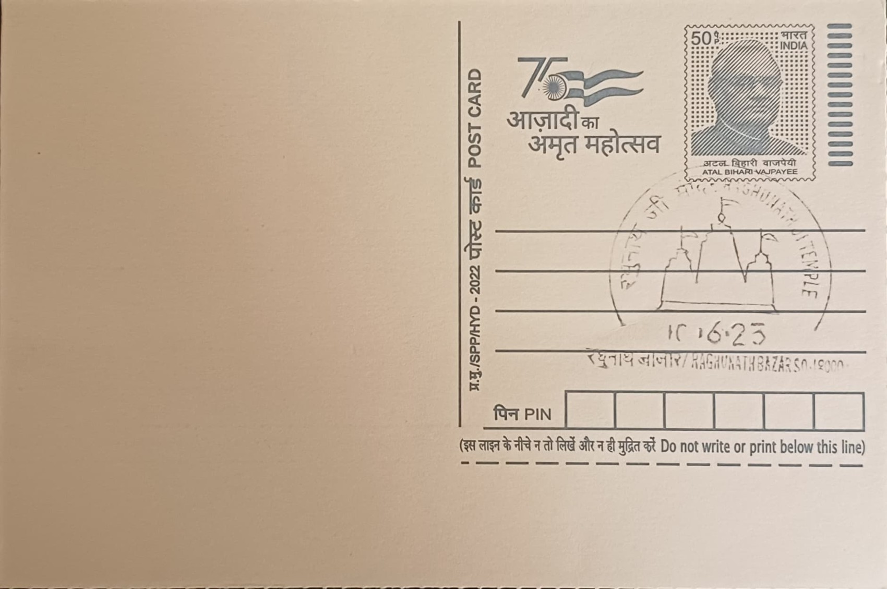

Raghunath Mandir
रघुनाथ मंदर


Raghunath Mandir takes its name from Raghunath, an epithet of Lord Rama as the scion of the Raghu dynasty, and stands at the heart of Jammu city as the principal seat of Rama worship in the Dogra homeland. Its establishment is tied directly to the rise of the Dogra dynasty: the temple was conceived not merely as a place of worship but as a dynastic and religious statement by the rulers who had just consolidated the princely state of Jammu and Kashmir, anchoring the new capital's identity in Vaishnavite devotion at a moment when Dogra political power was itself being founded.
As one of the largest temple complexes in northern India, Raghunath Mandir occupies a central place in the religious and civic life of Jammu, which is popularly styled the "City of Temples" in no small part because of it. Beyond its devotional role, the temple functions as a historical monument of Dogra statecraft, since its upkeep has been tied since 1846 to the Dharmarth Trust, an endowment created by Maharaja Gulab Singh to fund religious and charitable institutions across the state. This dual identity, as both an active shrine and a royal endowment, gives the temple a significance that extends well beyond ordinary parish worship into the documented administrative history of the region.
Construction began in 1835 under Maharaja Gulab Singh, founder of the Dogra dynasty, with some accounts tracing preliminary work to the early 1820s; the complex was substantially completed under his son and successor Maharaja Ranbir Singh, with sources dating the finished structure to between 1857 and the 1860s. The finished complex comprises seven interconnected shrines, each capped with a gold-plated spiral tower, arranged around a central sanctum housing the image of Raghunath. The interior walls are lined with an estimated 300 carved niches depicting deities from across the Hindu pantheon, with particular emphasis on scenes and figures drawn from the Ramayana and the life of Krishna, reflecting the Vaishnavite orientation the Dogra rulers actively promoted through their patronage.
The temple complex has twice been the target of fidayeen attacks by Lashkar-e-Toiba-linked militants, first on 30 March 2002, when suicide bombers killed eleven people including three security personnel, and again on 24 November 2002, when a grenade and gunfire assault left twelve dead and dozens wounded. Both attacks, coming within the same year, prompted a lasting security overhaul at the site, and the temple has since operated under a heavy police and paramilitary presence, with entry restrictions and screening that remain in force for pilgrims and visitors to this day. Despite this history, daily worship was never permanently suspended, and the shrine was reopened to devotees within a short period after each incident.
The temple's attached Sanskrit manuscript library, developed under Maharaja Ranbir Singh's patronage and later associated with the Shri Ranbir Sanskrit Research Institute, holds an estimated 6,000 manuscripts, many in the Sarada script, alongside thousands of additional printed books and rarities that remain only partially catalogued. Recognising the vulnerability of this collection to pests, humidity and regional instability, international efforts including the British Library's Endangered Archives Programme have supported digitisation work, with roughly a third of the manuscripts scanned to date. Administered under the Dharmarth Trust alongside the Dogra royal family's continuing religious endowments, Raghunath Mandir today functions simultaneously as a working temple, a heavily guarded public monument, and a repository of manuscript scholarship that draws researchers as well as pilgrims to the same complex in the centre of Jammu.
| Date of Introduction | October 23, 2022 |
|---|---|
| Address | Sub Postmaster, |
| Raghunath Bazaar SO, | |
| Jammu (dt.), Jammu and Kashmir - 180001. |